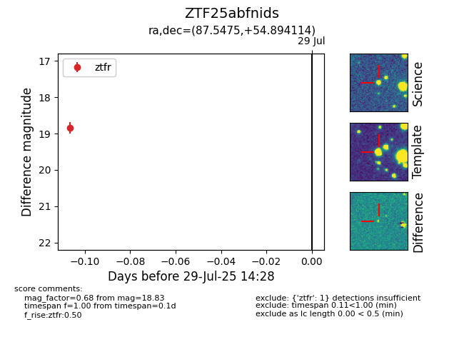

Target ZTF25abfnids at 2025-07-29 14:28, see:
FINK: fink-portal.org/ZTF25abfnids
Lasair: lasair-ztf.lsst.ac.uk/objects/ZTF25abfnids
ALeRCE: alerce.online/object/ZTF25abfnids
alt names
ZTF25abfnids (ztf,fink)
coordinates:
equatorial (ra, dec) = (87.5475,+54.89411)
galactic (l, b) = (157.7566,+13.76126)
photometry
last ztfr=18.83
1 ztfr detections
